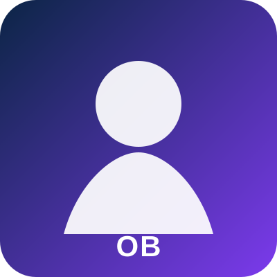

Chaînes de conversion résilientes

Cette fiche personnelle est prévue pour être enrichie avec le CV, le parcours, la vision scientifique, les projets illustrés, les activités d’enseignement et les liens bibliographiques du chercheur.
Mots-clés : Traction; résilience; architectures multi-sources